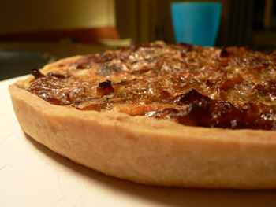
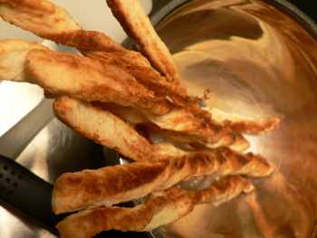

Advanced tart-making
I’m sorry that I’ve been so distant recently. I’ve had many (wonderful!) houseguests in the last couple weeks, and so much of time is taken up by my nighttime cooking class. Finding the time to make something interesting and post about it is difficult. Wednesday says it’s okay to just post once a week sometimes, since most people use RSS readers these days anyway (I finally learned what they are!). But I still begin to feel guilty when, say, six days go by.
But I had a great week in class, spending ten hours over two nights on tarts and potatoes. In the tart class, I learned that not only is it relatively simple to make a classic pâte brisée by hand on a table, it’s easier in some ways than using a food processor or a mixer, because you’re in no danger of overmixing. My problem before was that I would overmix and then give up if the dough was too crumbly. When I finally got it together, I didn’t know how to roll it out or handle it. If you mix it well and give it time to rest, it will behave and roll out beautifully.
For the baking, I’ve learned the distinct advantages of using a tart ring on a black steel pan (apparently not available from Amazon; I found one at the Panhandler). I had been baking tarts in my quiche pan, but I have yet to learn the secret to gracefully removing anything from those contraptions. (It’s a common sight in my kitchen to see me holding up the edge of the pan with one gloved hand while pushing the tart through the bottom with my other gloved hand. It’s not a good look.)
No such problem with the ring. Here is André Soltner’s onion tart as it was meant to be presented: short and well caramelized. The crust could be thinner.

I used the leftover crust to make a quick version of Mark Bittman’s fancy cheese straws. Basically, I folded a ton of parmesan cheese into the dough, rolled it out, and cut it up. Baked at 400ºF for 15 minutes and showered with salt, they were perfect with a cold glass of boxed chardonnay.

Comments
So I am not exactly sure what the difference between a tart ring and a quiche pan is, but if by quiche pan you mean that contraption with the removeable bottom, here’s a hint: instead of risking 3rd degree burns and the distinct possibility of ruining all your hard work, simply place the pan on a tin can. The bottom balances, and the outer ring slides down. TA-DA.
Ah! That is geeenius! How did I not think of that? Why did my engineer boyfriend not think of it for me?
Carly – that is a great idea. I’m definitely doing that next time I bake a tart.
Add a comment